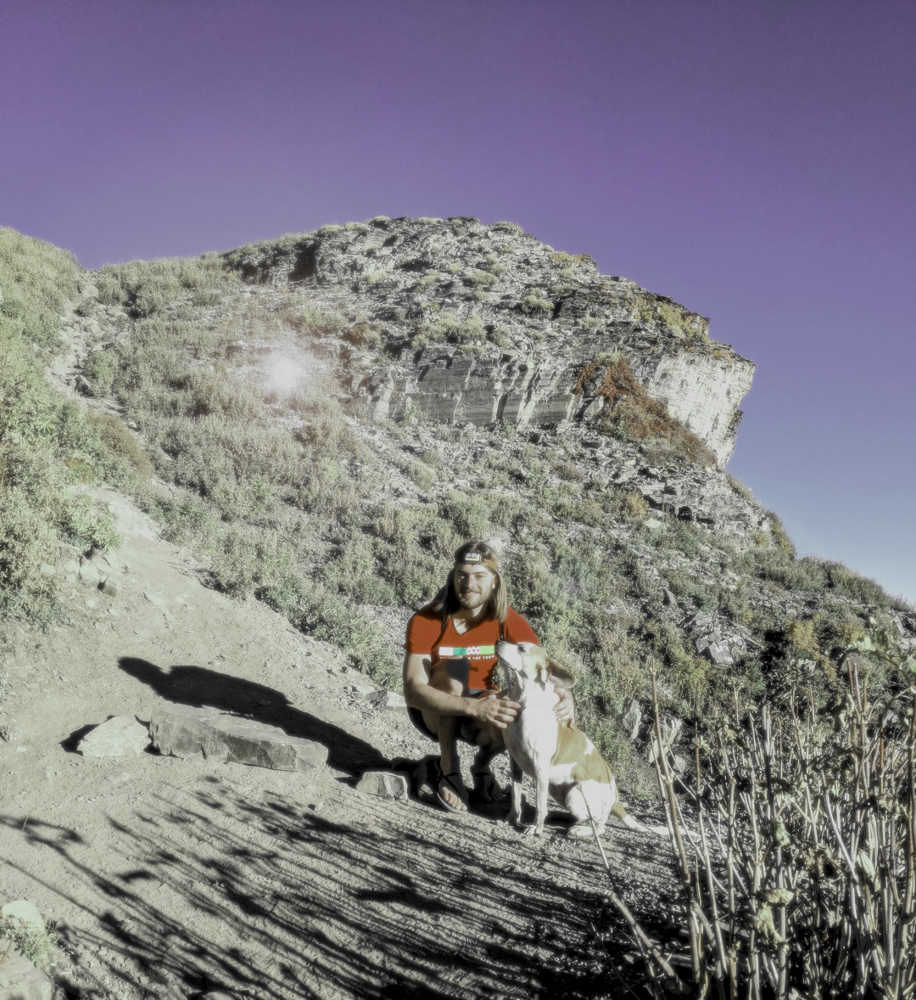

Adam Colton: University of Utah 2023
Projects:
Gravity Market:
A D3 javascript web app which uses a physics simulation to display the percent change in value of various stocks from the S&P 500. This project was made for Vis for Data Science 2022 taught by Dr. Alexander Lex at the University of Utah. Source code to be added soon!
A D3 javascript web app which uses a physics simulation to display the percent change in value of various stocks from the S&P 500. This project was made for Vis for Data Science 2022 taught by Dr. Alexander Lex at the University of Utah. Source code to be added soon!
Songs from Ukraine :
I scraped several hundred gigabytes of social media posts and analyzed the music found in them. Videos were scraped from the Telegram social media platform. Music metadata was retrieved from the videos using Shazam.
Videos were retrieved over the course of months. The scraping process was scheduled using SystemD units on a linux server. CSV metrics on the data were updated asyncronously via file changes. The code for the scraper and data processing was written in Python.
I scraped several hundred gigabytes of social media posts and analyzed the music found in them. Videos were scraped from the Telegram social media platform. Music metadata was retrieved from the videos using Shazam.
Videos were retrieved over the course of months. The scraping process was scheduled using SystemD units on a linux server. CSV metrics on the data were updated asyncronously via file changes. The code for the scraper and data processing was written in Python.
Visualization of a Computationally Derived Fentanyl Binding
Protein :
I used PyMol to create an animation of a binder enzyme as it transitions to the bound state. The program 'Climber' is used to interpolate between the bound and apo states.
I used PyMol to create an animation of a binder enzyme as it transitions to the bound state. The program 'Climber' is used to interpolate between the bound and apo states.
Ascii Art Autoencoder:
I trained a adversarial autoencoder on ASCII art. The characters in the art are represented as one hot encoded vectors at each 'pixel' in the string.
I trained a adversarial autoencoder on ASCII art. The characters in the art are represented as one hot encoded vectors at each 'pixel' in the string.
Ethminer GUI:
A simple cross platform GUI app written in Rust for the ethminer CLI program. It includes capturing of console output from the program, and asyncronous channel communication using Tokio.
A simple cross platform GUI app written in Rust for the ethminer CLI program. It includes capturing of console output from the program, and asyncronous channel communication using Tokio.